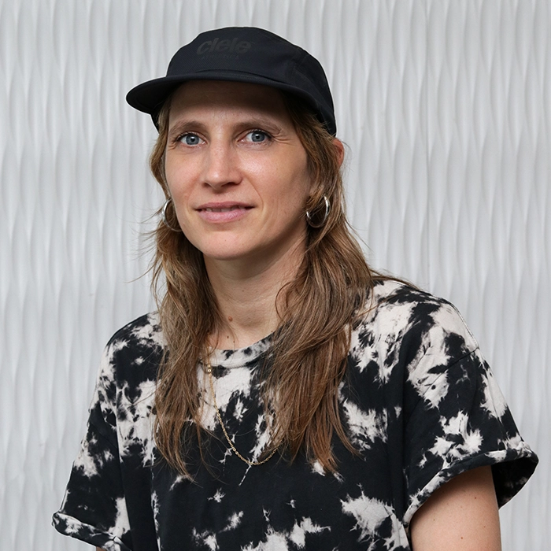
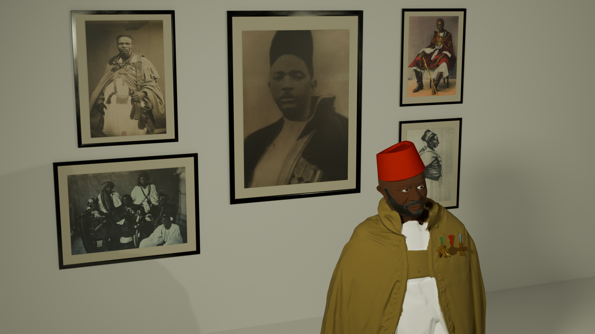

Emmanuelle Charneau
Humain, nature, machine, 2026
Artiste interdisciplinaire, Emmanuelle vit et travaille à Tiohtià:ke/Mooniyang/Montréal. Diplômée en arts visuels à Bruxelles en 2007, elle s'établit au Québec où elle exerce comme designer graphique et directrice artistique indépendante. Depuis 2017, elle développe une pratique artistique orientée vers les arts imprimés, la photographie, les installations multimédias interactives et l'art génératif. Candidate au DESS en arts, création et technologies depuis 2025, elle poursuivra ses recherches à la Maîtrise de cinéma et arts médiatiques à l'Université de Montréal.
Son inspiration prend racine dans une réflexion sur des questions écologiques et philosophiques liées à la perception, à l’attention et aux relations entre les humains et les non-humains, une base qui sous-tend aujourd’hui son travail de recherche-création dans le domaine des médias numériques interactifs. Sa démarche vise à déconstruire la conception dominante des sociétés technoscientifiques qui éloignent l’humain de sa subjectivité et le séparent de la nature et des objets du monde.

installation audiovisuelle interactive, matières végétales et minérales, capteurs, dispositif sonore interactif
dimensions variables
Partant de la conviction que l’attention est une faculté qui se développe, cette installation propose un espace de création collective où le public manipule des éléments naturels agencés sur une table. Les sons ambiants, captés en temps réel, activent une trame sonore évolutive donnant naissance à de nouvelles perceptions de la réalité. Chaque geste devient un acte d’écoute profonde.